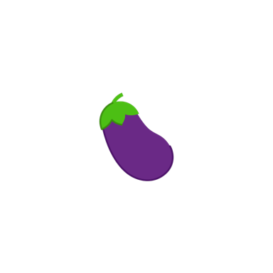
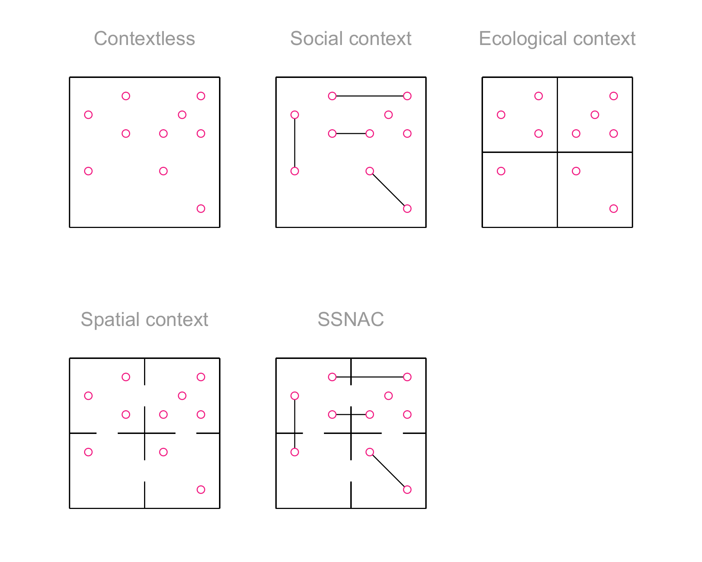
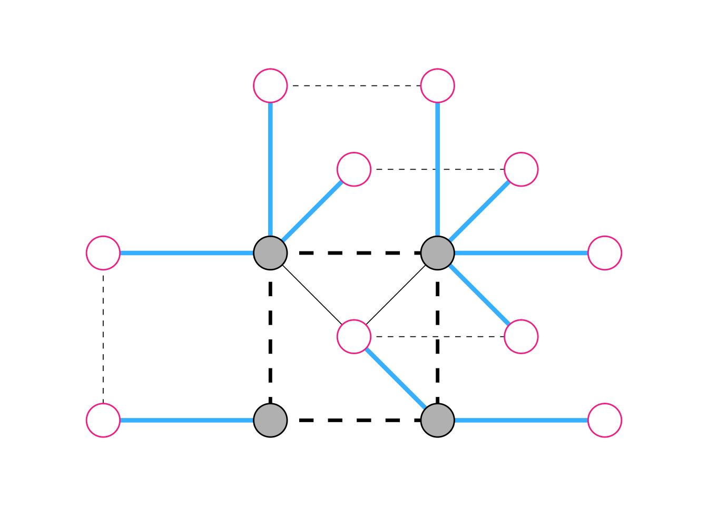

Code
plot_icon(icon_name = "eggplant", color = "dark_purple", shape = 0)
plot_icon(icon_name = "eggplant", color = "dark_purple", shape = 0)
The name and main ideas of SSNAC were sketched out in a symposium titled “BEYOND disparities: Broadening Epidemiologic methods of ‘who, what, where, when, and whY’’ to further consider ‘hOw’’ we research has the potential to move health equity in New Directions” organized by Nedghie Adrien (Harvard University) and Julie D. Peterson (University of Nebraska) at the Society for Epidemiologic Research mid-year meeting (virtual, January 2025). Leading up to that presentation, the ideas developed in conversation with Eric Tchetgen Tchetgen (University of Pennsylvania) and colleagues at University of Pennsylvania Center for Causal Inference.
Lead author: Keletso Makofane, MPH, PhD. Editor: Nicholas Diamond, MPH. (Published: June 2025).
The Social and Spatial Network Analysis with Causal interpretation (SNACC) framework is an approach to collecting, analyzing, and interpreting data which explicitly accounts for causal relations among people, among places, and across people and places. It is applicable in two situations: when investigators want to describe patterns in how people interact with each other and/or with shared spaces; or when investigators are interested in understanding or intervening on the causal system formed by these components.
To motivate the framework, we consider a study investigating the risk of acquiring a cold among individuals (pictured as dots in physical space in each frame of Figure A.1) in a setting where there is only one infected person. Since colds are transmitted through close contact among infected and susceptible people, we can conceptualize the risk of an individual as a characteristic of the physical context they share with other (possibly infected) people.
The simplest approach (first frame, Figure A.1) would be to assign the average risk of acquiring a cold to each individual based on knowledge about the total number of susceptible people, and the number of infected people. The problem with this strategy, though, would be that those who are more likely to interact closely with the infected person have higher risk, and not all people are equally likely to interact.
plot_context_figure()
We could improve on this analysis using a social network analysis (second frame, Figure A.1). In this approach, we would use knowledge about relationships to gain a more granular understanding of risk. We could assume, for instance, that people who are in relationships that cause them to physically interact have higher risk than those who are not in such relationships. We could further assign different levels of risk to different connected components of the network. In Figure A.1, relationships are shown using lines connecting the dots.
An ecologic analysis (third frame, Figure A.1) would use knowledge about patterns of interaction in space to group people into categories. We could divide people into households, for instance. Assuming that people physically interact with household members significantly more than they do with non-members, households could be assigned differing levels of risk. In Figure A.1, households are marked using a fence surrounding each household.
A spatial analysis (fourth frame, Figure A.1) would also use knowledge about patterns of interaction in space to group people into categories. Unlike in the ecologic approach, in a spatial analysis, we assume that some pairs of categories influence each other as a result of their adjacency in physical space. We could assume that the risk of acquiring a cold is a function of i.) interactions with one’s own household members; and ii.) interactions with members of neighboring households. In Figure A.1, household adjacency is shown as a gap in the boundary separating households.
A SSNAC analysis (final frame, Figure A.1) would integrate knowledge about patterns of interaction between individuals, within spatial units, and across spatial units to gain a granular understanding of risk. We could assume that the risk of acquiring a cold is a function of i.) interactions with one’s own household members; ii.) interactions with members of neighboring households; and iii.) interactions in personal relationships within and across households.
Social and spatial analysis with causal interpretation (SSNAC)
The data are a network
The central data structure in a SSNAC is the data graph. Figure A.2 depicts the final frame of Figure A.1, showing households as nodes in a network, connecting neighboring households with a network edge, and connecting individuals with the households they belong to. In a data graph, study data are stored as node or edge attributes. Person nodes might have attributes like age and race whereas place nodes could have attributes like density or surface area. An edge linking a person to a place might have an attribute conveying how the person relates to the place (e.g. home or work) and an edge linking a person to a person might have attributes related to the type of relationship (e.g. friend, sex partner, etc.).
Code

The network is a causal structure
The data graph is a starting point for constructing a causal model, but it is not sufficient. Depending on the causal question, some edges in this graph are relevant and some are not. For example, if we were interested in a rumor network, we might decide to depict only people and not places in the causal graph. We might also choose to ignore the neighbor relation and focus only on friend and co-resident relations if it is the case that rumors are transmitted within households and across friendships but not to neighbors.
If we were interested in COVID during a stay-at-home order, by contrast, we might keep the neighbor and resident edges and drop the friend edges. In any event, it is necessary to make changes to the data graph so that the definitions for nodes and edges are compatible with the causal theory guiding the analysis.
New causal structures open new causal enquiries
The SSNAC framework opens up the potential to investigate causal queries that more closely resemble the program decisions that public health leaders must make when faced with health challenges. There are four basic types of causal query focusing on node-level attributes:
Person-to-place intervention: Evaluating the causal impact of a person-level intervention on place-level outcomes for some defined set of people and some defined set of places. e.g. What is the impact of vaccinating college-aged adults on mpox incidence in Washington Square Park, a popular hangout spot for college students?
Person-to-person intervention: Evaluating the impact of a person-level intervention on person-level outcomes for some defined sets of people. e.g. How does vaccinating all cisgender white men in New York City affect mpox incidence among cisgender Black and Latinx men in New York City?
Place-to-place intervention: Evaluating the impact of a place-level intervention on place-level outcomes for some defined sets of places. e.g How does vaccination in Manhattan affect mpox incidence in Brooklyn?
Place-to-person intervention: Evaluating the impact of a place-level intervention on person-level outcomes for some defined set of people and some defined set of places. e.g. How does vaccination in Harlem affect mpox incidence among cisgender Black men in New York City?
In addition, there is endless potential for constructing causal queries about characteristics that cannot be represented as node attributes but rather as emergent properties of the network. We investigate such a query in Appendix B.